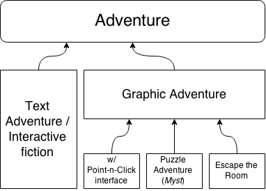
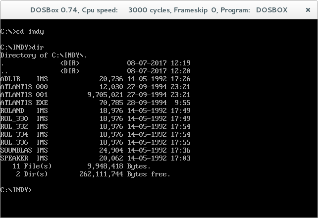
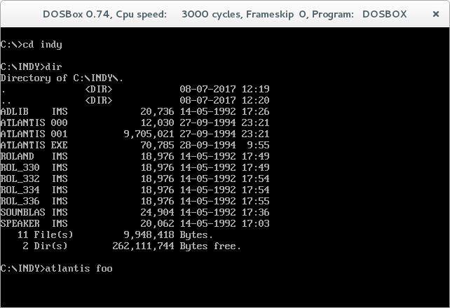
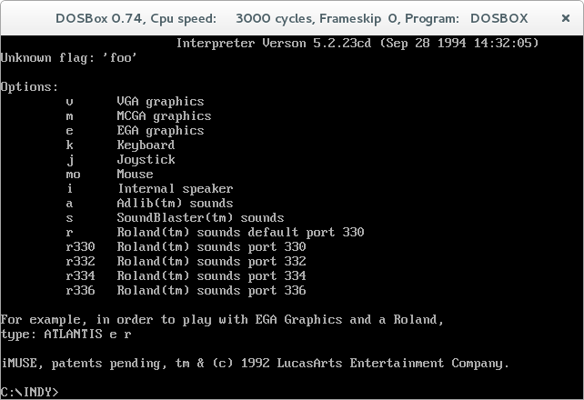
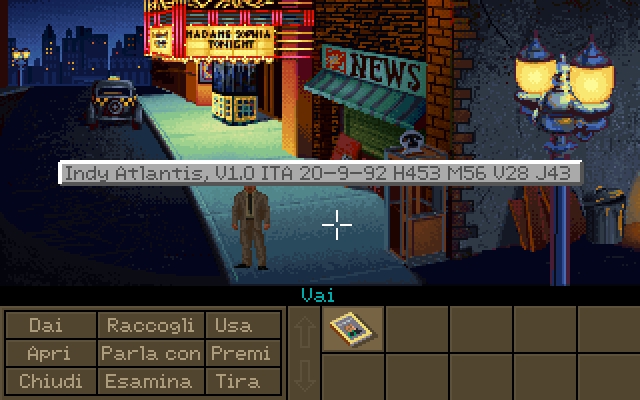
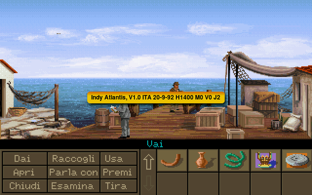

When back in 1987 Ron Gilbert and Aric Wilmunder, later nicknamed the "SCUMM lords", started working on SCUMM, the procedure to split game software into two different parts, assets on one side and interpreter on the other, was quite usual, at least for what concerns adventure videogames.
The thing was already beed tried out successfully by Siera On-line developers since 1984 with their AGI (Adventure Game Interpreter) and SCI (Sierra Creative Interpreter) interpreters and earlier by the famous Infocom, back in 1979 with the Z-machine, the virtual machine in charge of intepreting resource files containing all the interactive fiction contents.
By the way, if you search "interactive fiction" on Wikipedia, you will find that this is only one of the many sub-genres related to the overall adventure game one. Actually, interactive fiction was one of the first kind of adventure games which was bring to the market.

The change to use the mouse as a mean to interact with the game came later (from here the name click-and-point adventure). The images too came later, initially only in black and white format, then in colors (vectorial and bitmap graphics).
Adventure games became graphical only gradually while, at the beginning, the game experience consisted in reading the text shown on screen, maybe enriched with some sound effects, and in typing pairs of words, verb-noun, to fed the game parser with and make the story going on.
Even more interesting can be to link the interactive fiction genre to the "analog" version of it: I'm talking about the "Choose your own adventure" literary genre which gained a great popularity in the '80 but began to be experimented since the '40.
... better for me to stop here before to definitely loose myself in looking for the origin of the adventure genre. Anyway, from the reference section below you can find a list of useful links you can use yourself to go deeper into the subject.
Game and Intepreter
Stop wandering now and let's start to examine something concrete about the SCUMM world. Let's see what's the difference between the game and the interpreter.
We will need to run our LucasArts games, either on an old PC or on an emulated one (using DOSBox for example), and type some commands to show information about the interpreter and the game itself.
Here's a video I've prepared for the occasion (english subtitles will be available soon):
In this example I've used one of my favourite game, "Indiana Jones and the Fate of Atlantis" running in DOSBox. Suppose you already have the game folder on your virtual hard drive, let's enter inside it, with the `cd` command, and print the list of its content usign the `dir` command:

We are interested in that file with the `.exe` extension: this is the SCUMM interpreter, the computer program in charge of decoding game resources and able to run the game!
We want to know what's its version (we will need this information later when we'll move to scritp "descumming") and in order to do this we try to run the interpreter passing it an intentionally invalid argument (say `foo`). The interpreter will not understand it so it will show an error message and also the information we are looking for!

As you can see from the image above, this massage is showing us what are the correct arguments to use. In addition to that, on the upper right corner, we clearly read the version number.

Now, let's run the game passing some contemplated parameter: let's say I want to enable VGA graphics and SoundBlaster sound so I will use the `v` and `s` commands respectively.
When the game has started, let's use a keys combination to show the version of the game this time: the combination is made of `ctrl` and `v` and will cause the game to pause and a message to pop-up on screen.
As we see there is a difference from the interpreter version and the game version.

Game and interpreter versions are different because game and interpreter are two different software components. The game is indeed a whole made of images, text and scripts, compacted and encoded into specific resource files inside the directory while the interpreter is a software program which job is to decode these files and interpret them in order to run the game on our computer.
The same keys combo seen above is still valid if we are playing the game using ScummVM!

Here's a table where I listed all the informantion about my LucasArts games:
Interpreter
Game
executable
ver.
timestamp
ver.
timestamp
Monkey Island
monkey.exe
5.3.04 CD
Apr 12 1994 15:49:24
CD-ROM version 2.3
//
Indiana Jones and the Fate of Atlantis
atlantis.exe
5.2.23cd
Sept 28 1994 14:32:05
Ver 1.0 ITA
20-09-92
Monkey Island: LeChuck Revenge
monkey2.exe
5.2.25cd
Sept 26 1994 12:09:02
Ver 1.0
21-11-91
Day of The Tentacle
tentacle.exe
6.4.2
Jun 02 1993 18:04:22
Ver 1.0 ITA
//
Sam & Max Hit the Road
samnmax.exe
7.0.2F
Jun 29 1994 15:39:02
Ver CD 1.0
05-01-95
Full Throttle
ft.exe
7.3.5
Jul 06 1995 10:40:24
//
//
The Dig
dig.exe
7.5.0i2
Feb 09 1996 13:31:00
Ver 1.0
//
References
Accordi Richards, M. (2014). Storia del videogioco. Carocci Editore. It's a book I bought in Italy but I think there's a lot of books about the history of videogams that can do the job!